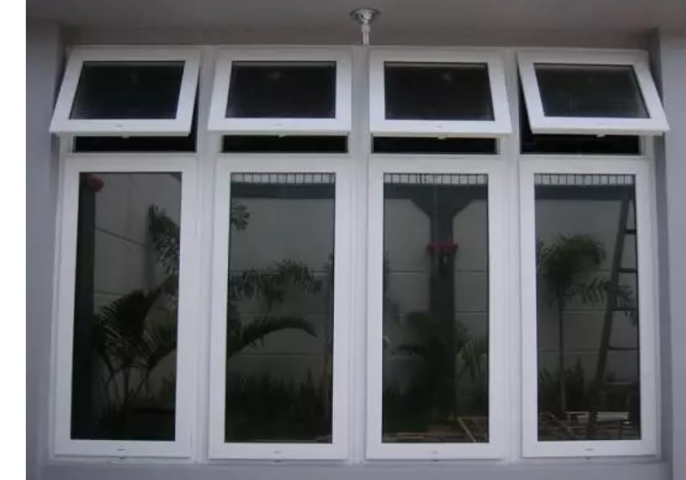

Tidak memerlukan ruang ayun
Panel tidak dibuka, sehingga area ayun atau ruang lintasan tidak dibutuhkan. Tetap periksa kebutuhan akses dan pekerjaan di sekelilingnya.
Jendela UPVC kaca mati, atau fixed windows, merupakan panel yang terpasang tetap dan tidak memiliki mekanisme untuk dibuka. Model ini dapat dipilih untuk bukaan yang memerlukan bidang kaca tetapi tidak membutuhkan ventilasi melalui jendela tersebut. Kaca mati UPVC untuk void juga dapat dipertimbangkan di area tinggi, dengan perhatian khusus pada akses pemasangan, pembersihan, dan kondisi bangunan. Karena tidak bisa dibuka, fungsinya perlu dipastikan sejak tahap perencanaan.

Jendela fixed tidak dibuka, sehingga tidak memerlukan ruang ayun atau jalur geser. Panel ini tidak menyediakan ventilasi dan bukan akses keluar-masuk; siapkan jalur udara lain bila ruang memerlukannya.
Model ini dapat dipertimbangkan untuk bidang yang membutuhkan kaca tetap. Cahaya dipengaruhi orientasi dan naungan bangunan, sedangkan ukuran serta pembagian panel mengikuti bukaan aktual.
Keputusan terbaik dimulai dari fungsi ruang dan rencana perawatannya.
Panel tidak dibuka, sehingga area ayun atau ruang lintasan tidak dibutuhkan. Tetap periksa kebutuhan akses dan pekerjaan di sekelilingnya.
Kaca mati dapat dipertimbangkan untuk bidang tinggi yang tidak memerlukan bukaan, setelah akses pembersihan dan pemasangan ditinjau.
Model fixed memiliki fungsi panel tetap; tentukan sejak awal apakah kebutuhan ventilasi disediakan oleh bukaan lain.
Fixed dapat dipertimbangkan pada fasad, tangga, atau void jika rancangan bangunan sesuai. Untuk area tinggi, rencanakan akses pemasangan dan pembersihan kedua sisi serta prosedur kerja yang aman.
Jangan jadikan panel mati satu-satunya ventilasi atau akses evakuasi. Periksa ukuran bukaan, bidang tumpu, beban, dan persyaratan keselamatan kaca bersama pihak proyek sebelum menentukan kelayakan.
Evan UPVC berbasis di Bekasi dan melayani Indonesia. Pengukuran serta pemasangan bergantung pada lokasi dan cakupan layanan; sampaikan lokasi proyek saat konsultasi.
Detail final mengikuti survei dan kebutuhan proyek.
| Aspek | Informasi |
|---|---|
| Tipe | Panel tetap; tidak dibuka dan tidak memberi ventilasi. |
| Ukuran | Dimensi mengikuti survei dan persetujuan tertulis. |
| Kaca | Disesuaikan dengan fungsi dan lokasi. |
| Warna / finishing | Konfirmasi pilihan aktual saat konsultasi. |
| Sambungan | Detail pemasangan mengikuti penawaran. |
Konfirmasikan secara tertulis ukuran, kaca, tampilan, cakupan kerja, jadwal, harga, dan ketentuan. Foto tidak menetapkan spesifikasi.
Bersihkan kaca yang terjangkau dengan kain lembut. Untuk void atau sisi tinggi, siapkan akses kerja yang aman dan jangan menjulur dari jendela atau berdiri pada tepi tanpa perlindungan.
Periksa sambungan secara berkala. Jika tampak retak, rembes, atau longgar, dokumentasikan dan minta pemeriksaan; jangan membongkar seal sendiri.
Fixed tidak terbuka; awning membuka dari bawah, casement berayun dari samping, dan sliding bergeser. Bandingkan kebutuhan ventilasi serta ruang gerak.
Ilustrasi tampilan model fixed; ukuran dan detail kaca harus dikonfirmasi.

Konfirmasi fungsi serta akses sebelum persetujuan pekerjaan.
Ceritakan posisi bukaan, tujuan panel, kebutuhan ventilasi, dan kondisi akses. Foto lokasi berguna untuk diskusi awal.
Tinjau dimensi, bidang tumpu, akses pemasangan, serta rencana pembersihan, terutama untuk void dan area tinggi.
Periksa rincian ukuran, kaca, finishing, pekerjaan, harga, jadwal, serta ketentuan dalam penawaran tertulis sebelum menyetujui.
Setelah persetujuan, pekerjaan berjalan menurut cakupan yang disepakati. Tinjau hasil bersama pelaksana dan rencanakan perawatannya.
Jendela kaca mati adalah panel tetap yang tidak memiliki mekanisme buka-tutup. Karena tidak terbuka, model ini tidak menyediakan ventilasi. Pastikan fungsi cahaya, pandangan, akses, dan kebutuhan udara sudah dipertimbangkan sebelum menetapkan lokasinya.
Panel tetap dapat dipertimbangkan untuk void tinggi bila ukuran, struktur, kondisi pemasangan, akses pembersihan, serta kebutuhan bangunan dinilai oleh pihak yang menangani proyek. Rencana akses perawatan dan keselamatan harus disiapkan karena panel tidak dapat dibuka dari ruang.
Tidak. Jendela fixed tidak memiliki bukaan dan tidak mengalirkan udara melalui panel. Jika ruangan memerlukan ventilasi, bahas jendela operasional atau jalur ventilasi lain yang sesuai dengan tata ruang dan ketentuan bangunan.
Jenis kaca, warna, finishing, ukuran, dan detail pemasangan perlu dikonfirmasi berdasarkan kebutuhan lokasi serta opsi aktual. Minta rincian tertulis untuk konfigurasi yang ditawarkan. Jangan menggunakan foto sebagai bukti jenis, ketebalan, atau kinerja kaca.
Bersihkan permukaan yang dapat dijangkau dengan kain lembut dan cara yang aman. Untuk sisi tinggi atau sulit dijangkau, siapkan akses kerja yang layak dan jangan membersihkannya dengan menjulur atau berdiri di posisi berisiko. Periksa kondisi seal dan sambungan saat perawatan berkala.
Mulai dari diskusi fungsi dan foto lokasi, dilanjutkan survei serta pengukuran. Konfirmasi dimensi, pilihan kaca dan finishing, akses pemasangan, akses pembersihan, cakupan pekerjaan, serta penawaran tertulis. Produksi dan pemasangan berjalan setelah rincian disetujui.
Bandingkan panel tetap dengan pilihan yang dapat dibuka.
Ceritakan fungsi bukaan dan akses lokasi kepada Evan UPVC.